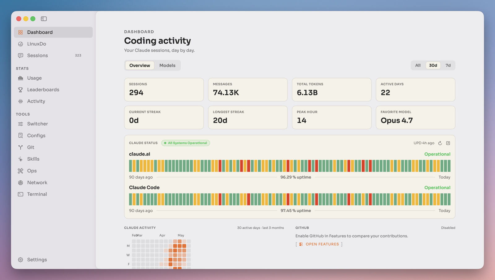
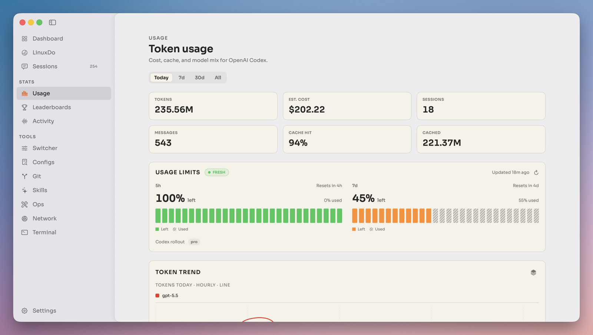
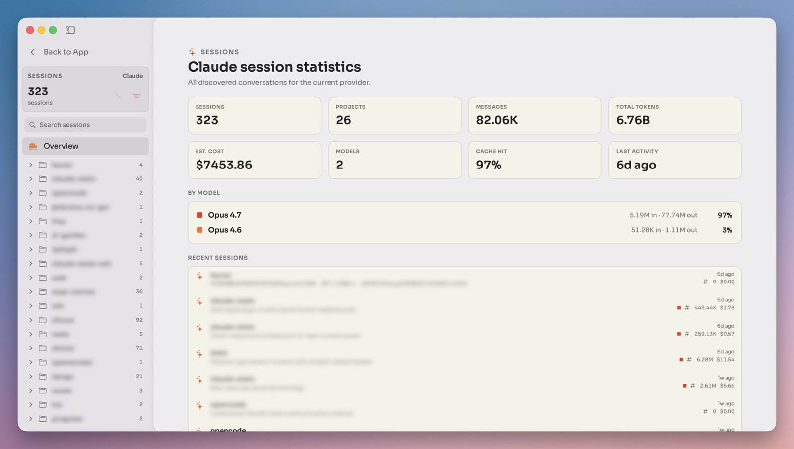
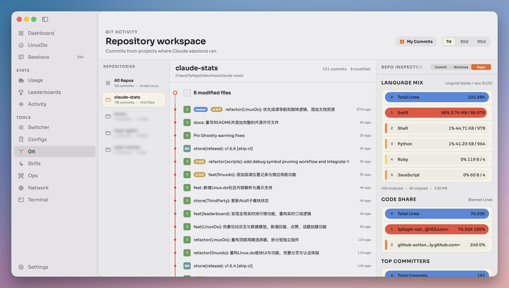

00 · GALLERY
Your work, read straight off disk.
Quiet by default, dense when needed — a native utility, not a marketing dashboard.




01 · FEATURES
Everything about your coding day, in the menu bar.
-
Menu-bar usage mapalways one click away
Tokens, estimated cost, cache activity, recent sessions, and provider status — at a glance from the menu bar.
-
Multi-provider by designClaude Code & Codex today
Provider-specific quirks live behind a clean adapter protocol, so new CLIs slot in without touching shared code.
-
Sessions & projectsentirely on-device
Inspect conversations, projects, messages, model mix, and personal records — nothing is sent to a hosted service.
-
Repository activityusage, mapped to commits
Correlate AI coding usage with local Git history and bundled per-language statistics across your repos.
-
Optional Notch Islandglanceable panels
Atoll-backed panels for activity, stats, media, timers, clipboard, and more — when you want them.
-
Packaged auto-updatesSparkle
Manual checks and silent background updates, delivered through a signed Sparkle appcast.
02 · PRINCIPLES
A few things it refuses to compromise on.
-
1
Local-first
Stats are read from local tool data like
~/.claudeand~/.codex. Your data never leaves your Mac. -
2
Quiet by default
Restrained color, stable tables, readable numbers — a native macOS utility, not a dashboard that shouts.
-
3
Multi-provider
One map for every CLI. Adding a provider is a folder, a protocol conformance, and one registry line.
03 · DOWNLOAD
Get TokenAtlas.
Apple Silicon Mac, macOS 14 or later. Free and open source under AGPL-3.0.
Download a build
Grab the latest packaged DMG or zip from GitHub Releases, then drag the app to Applications.
→ Latest releaseSparkle feed
The app checks this site's appcast for updates automatically; you can also check manually from Settings ▸ About.
→ appcast.xmlGatekeeper
Unsigned preview builds may need a right-click ▸ Open on first launch. Build from source is also one command.
→ Build from source